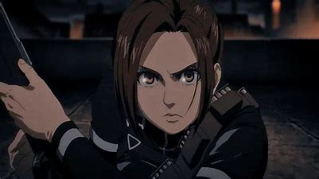

Sasha
Sasha Braus était une diplômée de la 104ème Brigade d'entraînement, en laquelle elle s'était hissée à la 9ème place. Elle avait, par la suite, décidé de rejoindre le Bataillon d'exploration. Elle était également l'une des rares survivantes de la Bataille de Shiganshina, la quasi-totalité des effectifs du bataillon ayant été décimés par leurs opposants. Elle perd cependant la vie lors de la Bataille de Revelio, tuée par Gaby Braun.